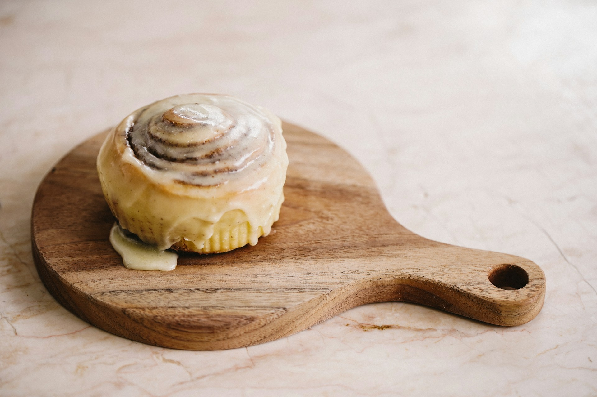
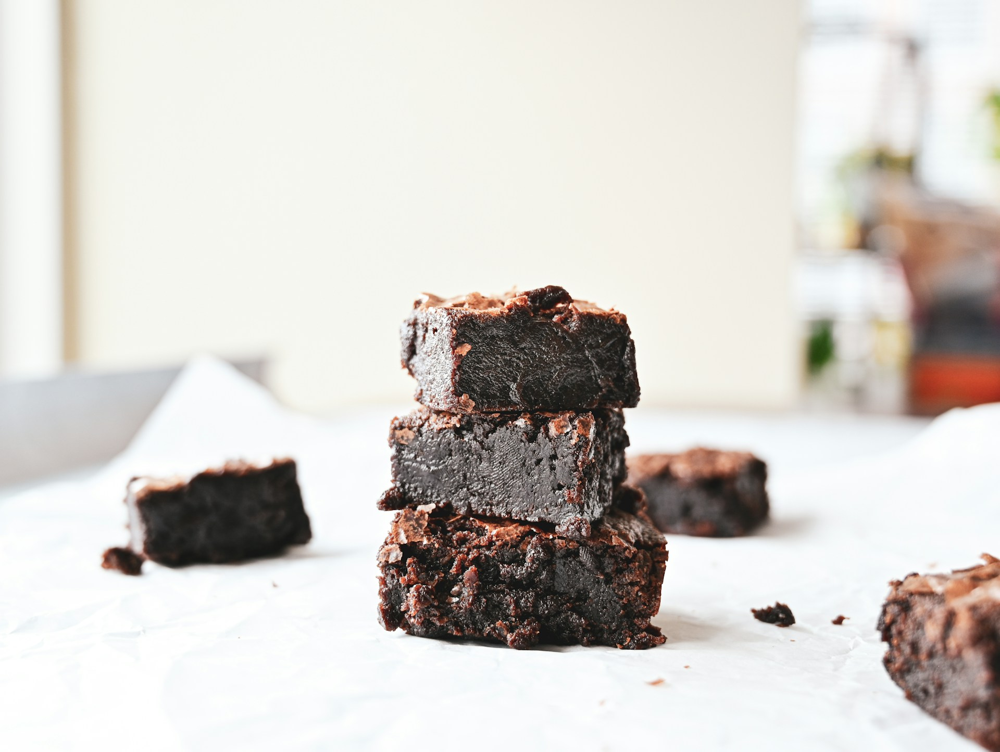

Home
Appetizers
Entrées
Desserts
Decadent Desserts
Red Velvet Cack
Sugar Cookies
Cinnamon Rolls
Brownies
Red Velvet Cake

Photo by amirali mirhashemian on Unsplash
Author:Anonymous
Total Time: 50 minutes
Cake Ingridients
- 2oz red food coloring.
- 3 tbsp Nestle's Quik chocolate.
- 1 1/2 cups sugar.
- 1/2 cup of butter.
- 2 eggs.
- 2 1/4 cups flour.
- pinch of salt.
- 1 cup of buttermilk.
- 1 tsp vinegar.
- 1 tsp baking soda.
- 1 tsp vanilla.
Frosting Ingridients
- 1/2 cup unsalted butter.
- 8oz cream cheese.
- 1 tsp vanilla.
- 1/4 tsp salt.
- 4 cups powdered sugar.
- 1 cup of heavy whipping cream.
Cake Instructions
-
In a small bowl mix food coloring and Nestle's Quick chocolate
until a very thin consistency is achived then set aside.
-
Cream together sugar and butter then add eggs. Once combined
pour in thin paste previoiusly made.
-
In a seperate bowl combine flour and salt and sift 3 times.
slowly add to the batter, beatting with a mixer on low or
medium. alternating with buttermilk.
-
After everything is combined hand stir vinegar, then baking
soda, & finally vanilla.
-
Grease two 8" cake pans and divide batter evenly. Bake on 350°F
for 30-35 minutes or until toothpick comes out clean.
-
Let cakes cool for 15-20 minutes then remove from pan and
complete cooling on a wire rack.
Frosting Instructions
-
In a bowl beat butter and cream cheese together until creamy and
lump free
-
stir in vanilla and salt.
-
In a seperate bowl beat heavy whipping cream until still peaks.
Set aside
-
Using a mixer on low, slowly add in powdered sugar to the cream
cheese mixture. Once fully combined flod in the heavy whipping
cream.
-
Once cakes are cooled all the way you are ready to frost and
stack them.
Serve and Enjoy!
Top of Page
Red Velvet Cack
Sugar Cookies
Cinnamon Rolls
Brownies
Sugar Cookies.

Photo by Cody Chan on Unsplash
Author: Anonymous
Total Time: 2 Hours 20 minutes
Ingridients
- 1 1/2 Cups powdered sugar.
- 1 cup Margarin or butter.
- 1 egg.
- 1 tsp vanilla.
- 1/2 tsp almond extract.
- 2 1/2 cups of flour.
- 1 tsp baking soda.
- 2 tsp cream of tartar.
Instructions
-
in small bowl combine butter, powdered sugar, egg, vanilla, and
almond extract then Set aside.
-
In a large bowl combine flour, baking soda and cream of
tartar. Add in the previous mixture.
-
Once everything is well combined cover and refrigerate for
atleast 2 hours.
-
Once dough has been chilled divide it in half and roll out to
3/16" thick on a lightly floured surface then use cookie cutters
to get your desired shapes.
-
Place on baking traying and bake at 375°F for 7-8 minutes.
-
Once baked let cool for 5-10 minutes them move to wire rack to
finish cooling. Once cooled you can decorate.
Serve and Enjoy!
Top of Page
Red Velvet Cack
Sugar Cookies
Cinnamon Rolls
Brownies
Cinnamon Rolls.

Photo by Yosep Sugiarto on Unsplash
Author: Anonymous
Total Time: 30 Minutes
Dough Ingridients
- 3 cups all purpose flour.
- 1 cup of warm milk.
- 1 tbsp instant dry yeast.
- 2 tbsps White granulated sugar.
- 3 tbsps salted butter.
- 1 tsp salt.
- 1 large egg.
Filling Ingridients
- 1/2 cup salted butter.
- 1 cup brown sugar.
- 2 tbsps cinnamon.
Glaze Ingridients
- 1 cup heavy whipping cream.
- 2-3 tsp clear vanilla extract.
- 2-3 cups of powdered sugar.
Filling Instructions
-
In a bowl combine brown sugar and cinnamon then set aside.
-
melt butter when you are ready to put in the filling.
Dough Instructions
-
In a bowl combine warm milk, sugar, and yeast. Set aside and let
the yeast bloom for 10 minutes.
-
in a once the yeast blooms, with a mixer, beat in salt, butter,
& eggs. Slowly add in the flour.
-
Once the dough comes together continue to knead it in the mixer
while slowly increasing the speed for about 5 minutes. The dough
should be tacky but not sticky.
-
Transfer dough to a greased bowl and let rise for 1 hour.
-
After an hour lightly grease or flour your surface and roll out
the dough into roughly a 12" by 18" rectangle.
-
Once you have your dough rolled out brush on the melted butter
then combine brown sugar and cinnamon in a bowl and sprinkle it
onto the melted butter. Lightly press down to make sure
everything stays.
-
Tightly roll up the dough length wise and then cut into 1"
slices. Move onto a baking sheat and let rise for 30 minutes to
an hour.
-
After rising bake at 325°F for roughly 14 minutes out until
golden brown.
-
Let them cool for 15-20 minutes before adding the icing.
Glaze Instructions
-
In a bowl lighly beat heavy whipping cream and then add in
vanilla and powdered sugar. Amount may very based off desired
thickness of icing.
Serve and Enjoy!
Top of Page
Red Velvet Cack
Sugar Cookies
Cinnamon Rolls
Brownies
Brownies.

Photo by Martinet Sinan on Unsplash
Author: Anonymous
Total Time: 1 Hour
Ingridients
- 2lbs ground beef.
- 2 large egg.
- 1-1 1/2 cups of bread crumbs.
- 1 small onion.
- 1 bell pepper.
- 2 tbsp garlic powder.
- 2 tbsp onion powder.
- 1/2 tbsp salt.
- 1/2 tsp black pepper.
- 2 tsp worcestershire sauce.
- 1/2 cup of brown sugar
- 1/2 ketchup.
Glaze
- 1/2 cup of ketchup.
- 1/2 cup of BBQ sauce.
Instructions
-
Chop up onion and pepper add to a medium bowl with gorund beef,
salt, pepper, onion powder, garlic powder, worcestershire sauce,
bread crumbs, egg, brown sugar, and ketchup. Combine well.
-
Combine ketchup and BBQ sauce for the glaze.
-
grease a large loaf pan and tranfer mixture in. Form to pan and
put in 375°F oven for 40 minutes then add glaze. bake for
another 10 minutes or until internal temperature is 160°F.
-
Let cool for 10 minutes then serve.
Serve and Enjoy!
Top of Page
Red Velvet Cack
Sugar Cookies
Cinnamon Rolls
Brownies